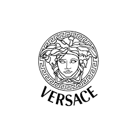

Gianni Versace S.r.l. je italijansko podjetje visoke mode in oblačil s sedežem v Milanu, ki ga je leta 1978 ustanovil kalabrijski oblikovalec Gianni Versace in ga po njegovi smrti vodi njegov brat Santo Versace in njegova sestra Donatella Versace. Septembra 2018 je bilo podjetje prodano skupini Michael Kors Limited, januarja 2019 pa je podjetje Gianni Versace S.r.l. se je pridružil Capri Holdings Limited za 2,12 milijarde dolarjev, s čimer je ustvaril novo luksuzno skupino z Michaelom Korsom in Jimmyjem Choojem, obdržal Donatello Versace kot vodjo kreativnega oblikovanja.
Zgodovina modne hiše Versace je družinska zgodba. Gianni Versace se je rodil v Reggio Calabria, kjer se je že od malih nog učil krojaške obrti svoje matere. Leta 1973 se je preselil v Milano in postal oblikovalec za Byblos, kjer je delal nekaj let, dokler se ni odločil ustvariti lastne modne hiše. "Gianni Versace Donna", ki se je rodil leta 1978 z odprtjem prvega butika na ulici via della Spiga v Milanu.Starejši brat Santo Versace družbo spremlja z menedžerskega vidika že od samega začetka, družbi pa se pridruži njegova sestra Donatella Versace z umetniškim vodstvom znamke Versus, mlade linije znamke. Gianni Versace velja za tvorca fenomena supermodela. Razumel je, kako pomembno je imeti znane obraze na svojih modnih revijah in oglaševalskih kampanjah, med njegovimi muzami so bile najslavnejše supermodele v zgodovini: Naomi Campbell, Carla Bruni, Claudia Schiffer in Cindy Crawford. Oblačil je tudi mednarodne zvezdnike, kot so Michael Jackson, Elton John in princesa Diana, ter sodeloval z najbolj znanimi fotografi, vključno z Richardom Avedonom in Petrom Lindberghom, s čimer je popolnoma spremenil način komuniciranja v modi.
"Versace Spring-Summer 2023 Women's"